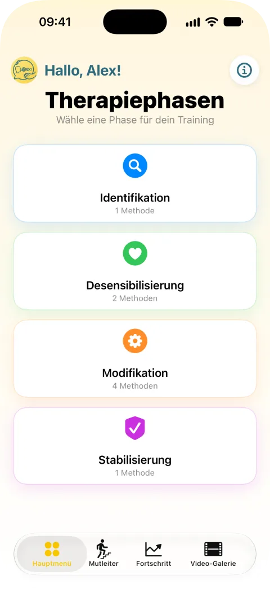
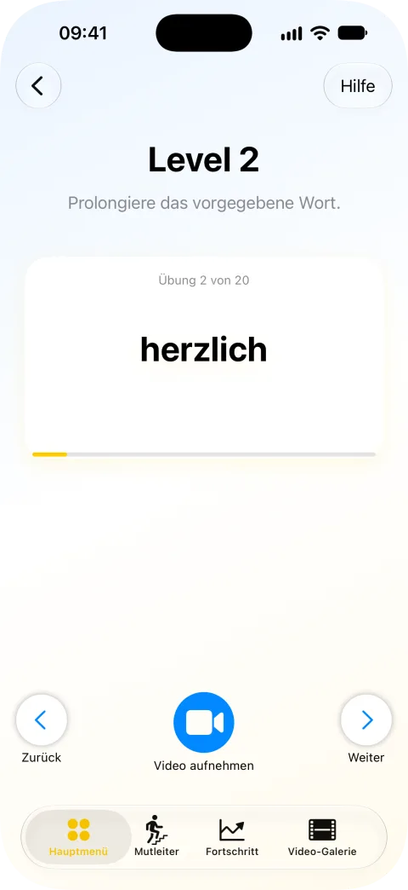
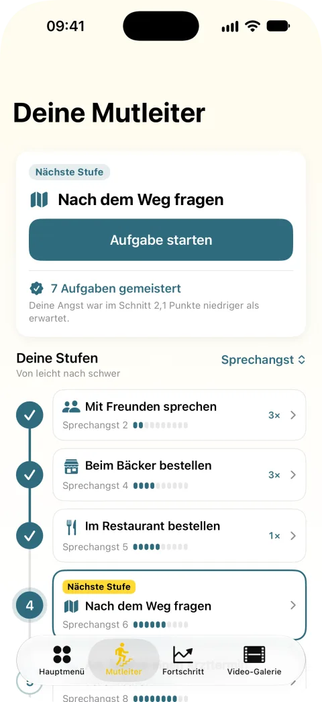
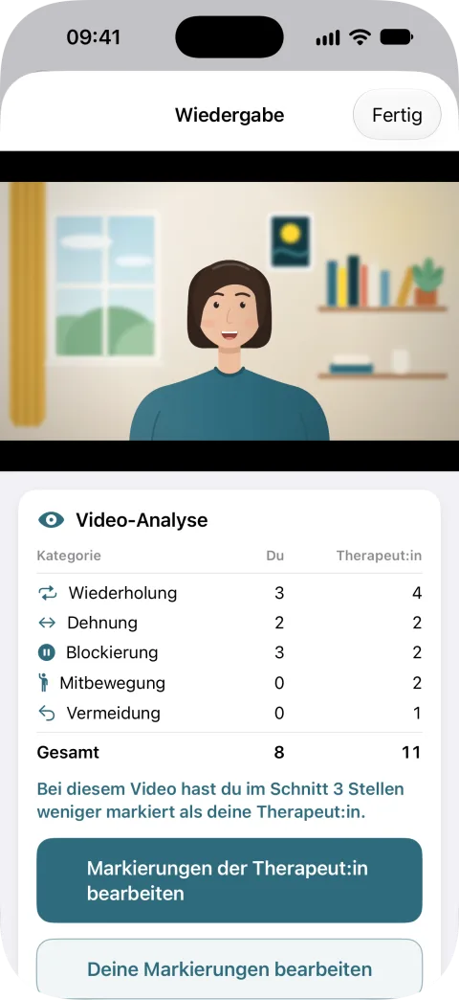
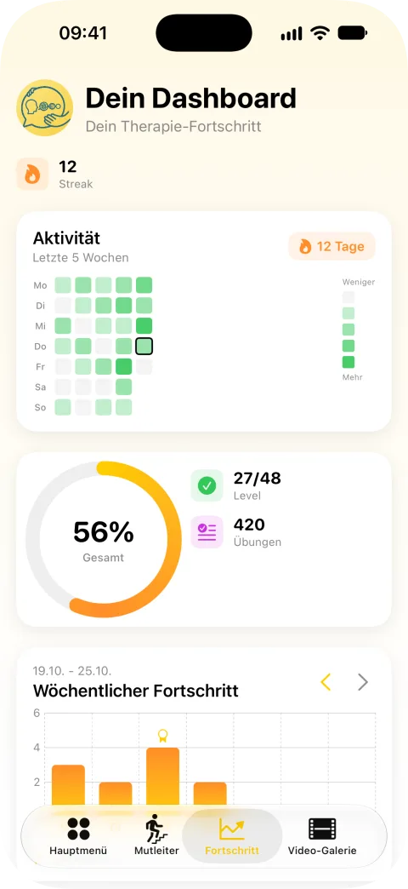
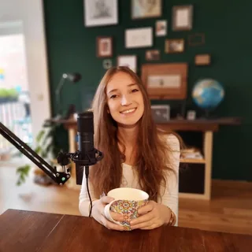

4 Phasen, 48 Level
Strukturiertes Training: Identifikation, Desensibilisierung, Modifikation und Stabilisierung. Nimm dich bei den Übungen auf Video auf.
Offizielle Therapie-App
Die offizielle App zum Therapiematerial „Intensiv-Modifikation Stottern“ nach Hartmut Zückner.
Jetzt für iPhone, iPad und Android laden.
Einblicke





Was die App kann
Strukturiertes Training: Identifikation, Desensibilisierung, Modifikation und Stabilisierung. Nimm dich bei den Übungen auf Video auf.
Ordne deine Alltagssituationen von leicht nach schwer, stell dich ihnen Stufe für Stufe und vergleiche erwartete und erlebte Angst.
Nimm dich beim freien Sprechen auf. Du und deine Therapeut:in markiert Stottermomente im Video und vergleicht eure Sicht.
Streak, Aktivitätskalender, Wochenverlauf und Level-Fortschritt auf einen Blick.
Über IMS Go
IMS steht für „Intensiv-Modifikation Stottern“, ein Konzept von Hartmut Zückner nach dem Ansatz der Stottermodifikation. IMS Go ist daran angelehnt und umfasst 48 Level in vier Therapiephasen: Identifikation, Desensibilisierung, Modifikation und Stabilisierung.
IMS Go ist eine App für Stotternde, die therapiebegleitend oder zur Nachsorge eingesetzt werden kann. Sie eignet sich auch zur Auffrischung der Techniken nach länger zurückliegender Stottertherapie.
Für einen guten Transfer der Sprechtechniken ist das Üben außerhalb des Therapieraums unbedingt empfehlenswert. Mit IMS Go kannst du die Techniken spielerisch und nach aufsteigendem Schwierigkeitsgrad auch zu Hause oder unterwegs üben. In der Video-Analyse markiert ihr, du und deine Therapeut:in, Stottermomente und vergleicht eure Sicht.
Der Download ist kostenlos. Premium schaltet alle Level, die Mutleiter, die Video-Analyse und alle Statistiken frei und kostet 2,99 € im Monat, 29,99 € im Jahr oder 49,99 € lebenslang (Stand: Oktober 2026).
Wer wir sind
Josephine Heinrichs und Jennifer Deischter haben IMS Go in Zusammenarbeit mit dem Natke Verlag entwickelt.

Logopädin, M.Sc. und Mitgründerin
Moin! Ich heiße Josephine und lebe in der wunderschönen Hafenstadt Hamburg! Zurzeit
arbeite ich als Logopädin und Lehrlogopädin für Redeflussstörungen.
Schon im Bachelorstudium in Aachen kam Jenny und mir die Idee, eine App für
Stotternde zu entwickeln. Im Rahmen meines Masters in Klinischer Linguistik konnten
wir diese Idee schließlich umsetzen! Ich freue mich sehr, die App nach drei Jahren
Entwicklung nun endlich präsentieren zu dürfen!
Logopädin, B.Sc. und Mitgründerin
Hey, ich heiße Jenny, komme aus der schönen Kaiserstadt Aachen. Zurzeit arbeite
ich als Logopädin in Heppenheim. Mein duales Logopädiestudium habe ich an der RWTH
Aachen absolviert und mache berufsbegleitend ein Fernstudium zur diplomierten
Legasthenietrainerin.
Meine Aufgaben liegen vor allem im organisatorischen Bereich
und in der Verwaltung des Instagram-Accounts. Wir freuen uns immer über Fragen und
Anregungen.
Jetzt laden
48 Level, die Mutleiter und die Video-Analyse mit deiner Therapeut:in unterstützen dich bei der Übertragung in den Alltag.
Kostenlos laden und loslegen. Mit Premium schaltest du alle Level, die Mutleiter, die Video-Analyse und alle Statistiken frei.
Die App unterstützt die Therapie bei Stottern, ersetzt aber nicht die Beratung durch Ärztinnen, Ärzte oder Therapeutinnen und Therapeuten. Bitte sprich vor medizinischen Entscheidungen immer mit qualifizierten Fachleuten.